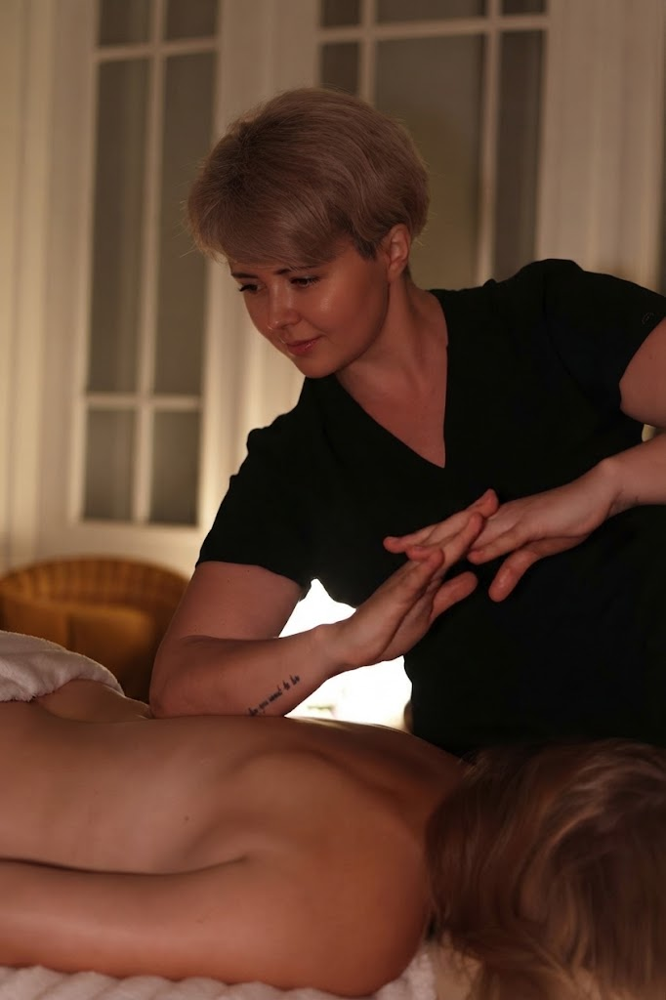
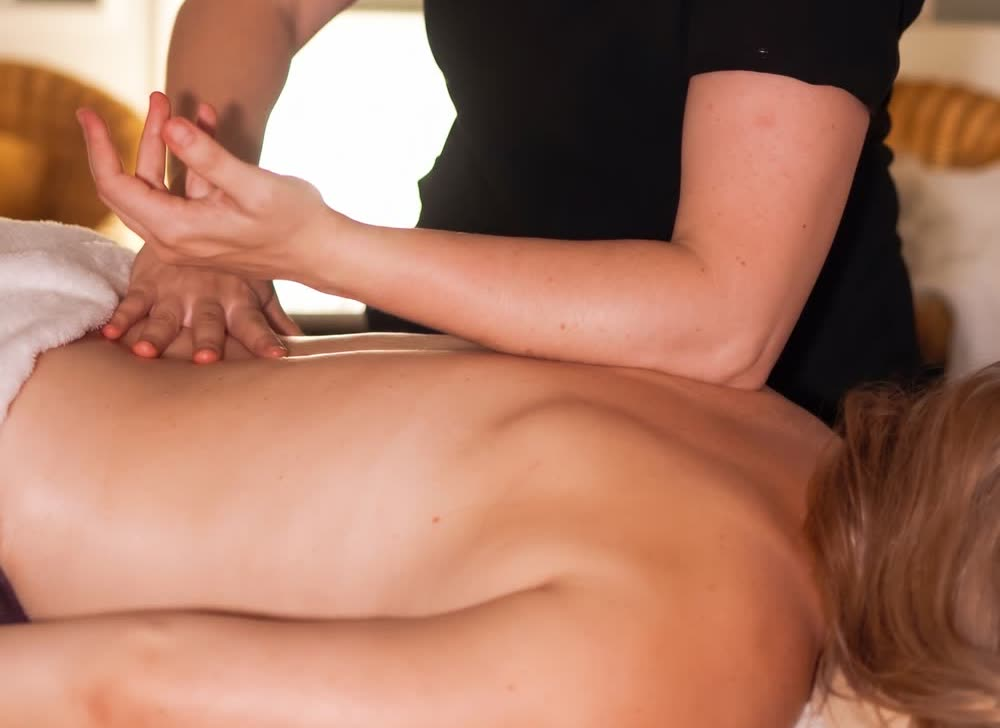

Courses 4 You · Szkolenia dla masażystów
Otwieramy nabór do grupy. Kurs dla osób, które już masują i chcą pracować głębiej: zdejmować napięcia, które nie puszczają po zwykłej sesji, i robić to bez zużywania własnych rąk.

O kursie
Kurs łączy dwie rzeczy, których zwykle uczy się osobno: techniki masażu tkanek głębokich i pasywny stretching. Dostajesz metodykę krok po kroku - w jakiej kolejności rozluźniać, w którym momencie wchodzić w rozciąganie i jak domknąć pracę, żeby efekt został w ciele klienta dłużej niż do wieczora.
Szkolenie jest dla osób, które już pracują z ciałem. Nie zaczynamy od anatomii od zera - zaczynamy od tego, co zrobić z napięciem, które nie odpuszcza po trzech standardowych sesjach.


Program
Jak w jednej sesji połączyć pracę na tkankach głębokich z pasywnym rozciąganiem: w jakiej kolejności, w jakim tempie i w którym miejscu przestać.
Techniki na napięcia i skurcze, które nie puszczają po zwykłym masażu - te, do których wracasz u tego samego klienta miesiącami.
Ustawienie ciała, dźwignia i ciężar własny zamiast siły kciuków. Tak, żeby po ośmiu sesjach dziennie nadgarstki i stawy nadal były Twoje.
Materiał powstał z praktyki specjalistów z Polski i Ukrainy oraz ze szkoleń u ekspertów zagranicznych, złożonej w jeden uporządkowany schemat pracy.
Prowadząca
Szefowa zespołu Massage 4 You. Na co dzień pracuje z klientami w studiu przy ul. Zeylanda na poznańskich Jeżycach - tam, gdzie każdego dnia widać, które techniki naprawdę działają, a które tylko dobrze wyglądają na szkoleniu.
Kurs powstał z tego, czego nauczyła się od praktyków z Polski i Ukrainy oraz od ekspertów zagranicznych, i z tego, co sama sprawdziła na własnych klientach. Przekazuje to w formacie, w którym da się wyjść z zajęć i użyć tego następnego dnia w gabinecie - po polsku albo po rosyjsku, zależnie od grupy.

Zapisy
Nabór do grupy jest otwarty. Skontaktuj się z nami, żeby poznać cenę, termin i szczegóły organizacyjne - zadzwoń albo napisz, a odpiszemy z pełną informacją o kursie.
FAQ
Dla osób, które już masują - masażystów i terapeutów manualnych, którzy chcą poszerzyć warsztat o pasywny stretching i głębszą pracę na tkankach. To nie jest kurs masażu od podstaw.
To rozciąganie prowadzone przez terapeutę: ruch ustawiasz i prowadzisz Ty, klient nie pracuje mięśniem sam. Integracyjny, bo rozciąganie nie jest osobnym blokiem doklejonym na koniec sesji, tylko wplecione w masaż i prowadzone w tej samej kolejności co praca na tkankach.
Termin, czas trwania i cenę podajemy przy zapisie, bo zależą od terminu i wielkości grupy. Zadzwoń pod +48 533 681 901 albo napisz na massage4youpoznan@gmail.com, a odpiszemy z pełną informacją.
To jeden z trzech głównych bloków kursu. Pokazujemy ustawienie ciała, dźwignię i wykorzystanie ciężaru własnego zamiast siły kciuków - w tym zawodzie to decyduje o tym, jak długo da się pracować bez kontuzji.
Zajęcia prowadzimy po polsku albo po rosyjsku. O język pytamy przy zapisie i dobieramy go do grupy, więc powiedz od razu, w którym pracuje Ci się swobodniej.
W Poznaniu. Dokładne miejsce i godziny podajemy grupie przed startem, razem z listą rzeczy, które warto ze sobą zabrać.
Używamy niezbędnych plików cookies, żeby strona działała. Za Twoją zgodą chcemy też korzystać z Google Analytics, żeby wiedzieć, które podstrony są przydatne. Wybór możesz zmienić w każdej chwili. Szczegóły w polityce prywatności.
Potrzebne do działania strony i zapamiętania Twojego wyboru. Nie można ich wyłączyć.
Google Analytics - zagregowane statystyki odwiedzin. Domyślnie wyłączone.